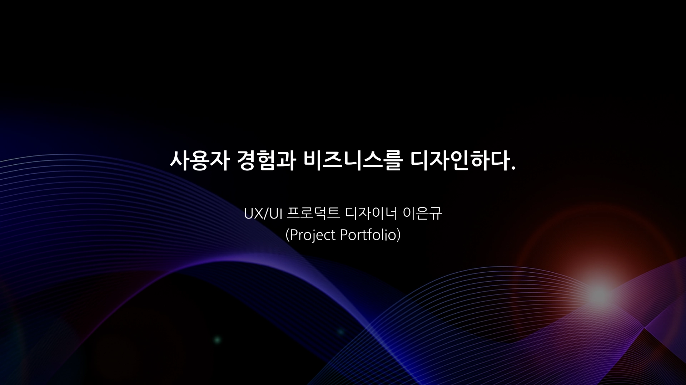
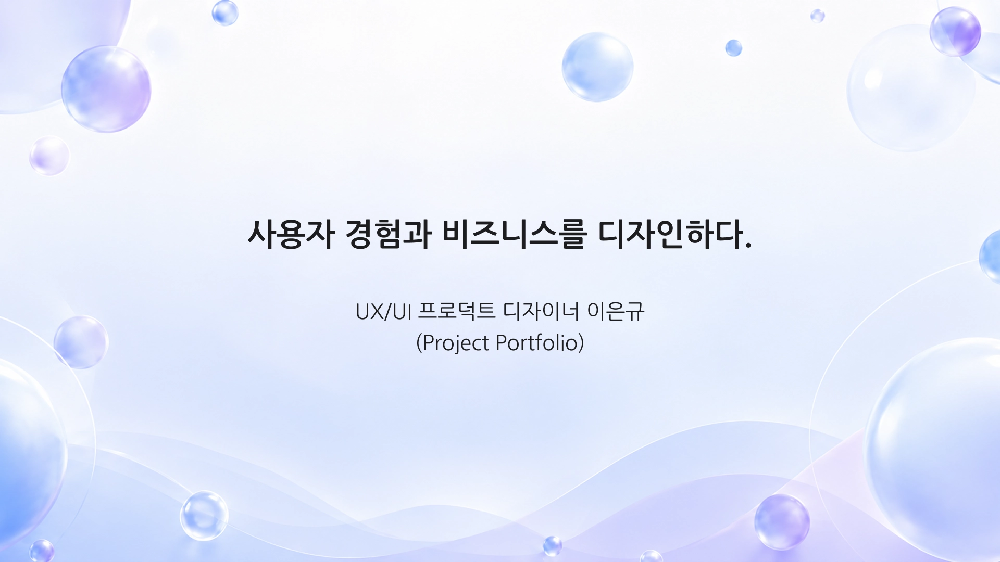
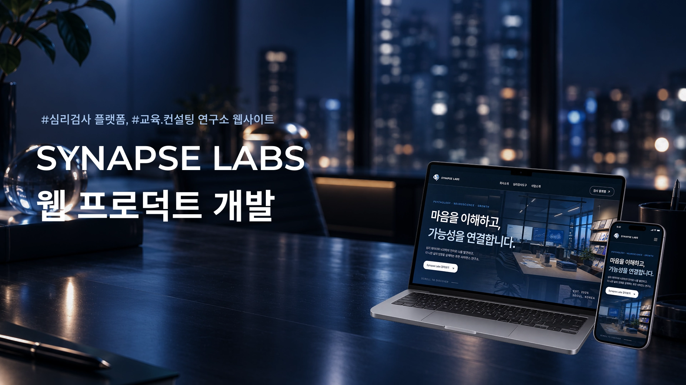
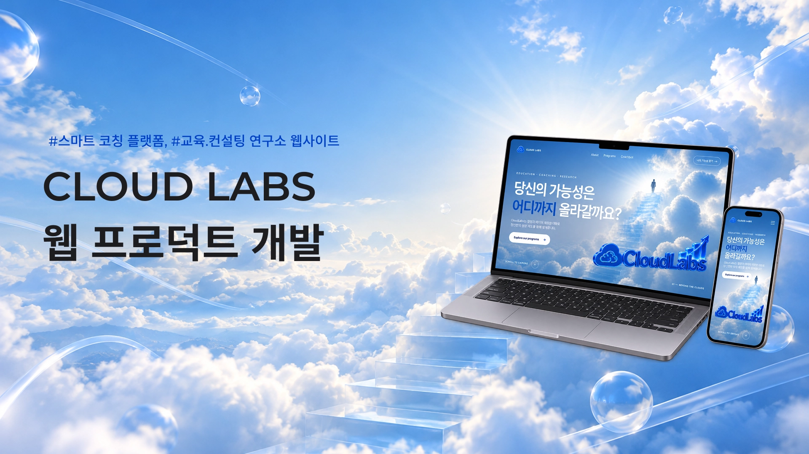
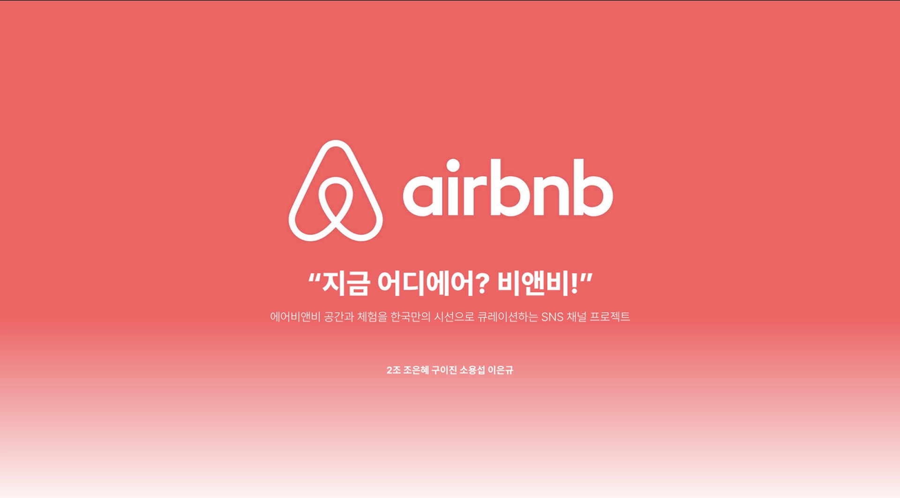
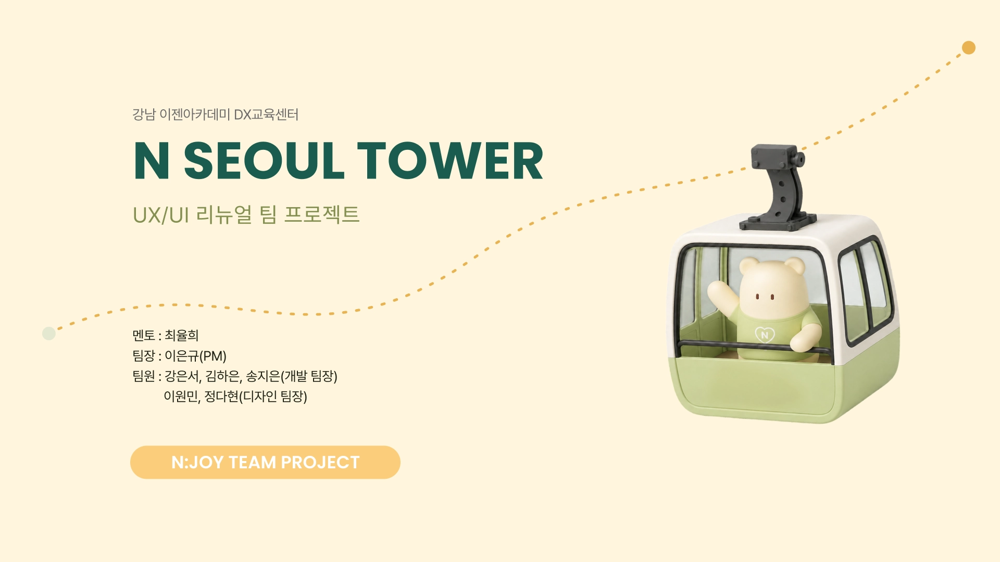

PDF ↗01 · 인턴 2기 · 2개월
LKBROTHERS
LKBROTHERS, SplaLabs, TissueBox, IP-patent, TODL, RedButton. Web3·블록체인·AI 브랜드의 UX/UI와 콘텐츠를 설계했습니다.
 LEE EUNGYUNOTION ↗
LEE EUNGYUNOTION ↗SERVICE PLANNER · PRODUCT UX/UI DESIGNER
“왜?”에는 기획으로,
“어떻게?”에는 UI로 답합니다.
HELLO, I’M EUNGYU.
UX/UI와 콘텐츠 디자인을 중심으로 서비스 기획, 웹 퍼블리싱, AI 에이전트 활용까지 연결합니다. 사회복지 전공과 취업 매니저 경험으로 사람을 이해하고, 두 기업의 통합 디자인 인턴 경험으로 비즈니스와 사용자 경험을 연결했습니다. 기획부터 디자인·개발·배포까지 실제 작동하는 결과로 완성합니다.
엘케이브라더스 · 2개월Web3·블록체인·AI / 디자인팀·마케팅팀
아이원소프트뱅크 · 2개월ERP·GW·SI·PMS / 마케팅팀
비즈니스의 문제를 푼 실무부터 직접 기획하고 배포한 개인 작업, 함께 완성한 팀 프로젝트까지.
프로덕트 기획부터 UX/UI, 콘텐츠 디자인과 퍼블리싱까지.

PDF ↗LKBROTHERS, SplaLabs, TissueBox, IP-patent, TODL, RedButton. Web3·블록체인·AI 브랜드의 UX/UI와 콘텐츠를 설계했습니다.

PDF ↗EEUM SQUARE, I-ONE Digitalware, I-ONE Softbank. B2B 플랫폼과 기업 웹사이트의 정보 전달, 신뢰, 가독성을 중심으로 디자인했습니다.
두 기업에서 진행한 웹사이트와 서비스를 한곳에 모았습니다. 모든 링크는 새 탭에서 열립니다.
Web3 · 블록체인 · AI
B2B · ERP · 소프트웨어
스스로 문제를 정의하고 기획·디자인·개발까지 연결한 다섯 가지 개인 작업입니다.
 LIVE ↗
LIVE ↗생성형 AI 커뮤니티의 웹 UX/UI를 리뉴얼한 개인 프로젝트.
 LIVE ↗
LIVE ↗N서울타워의 웹 경험을 기획하고 디자인한 개인 리뉴얼 프로젝트.
 LIVE ↗
LIVE ↗기획·디자인·개발을 거쳐 배포까지 진행한 웹앱 프로덕트 개발 프로젝트.

LIVE ↗직접 기획하고 디자인·개발하여 배포한 SYNAPSE LABS 웹사이트.

LIVE ↗기획부터 화면 설계, 개발과 배포까지 진행한 CLOUD LABS 웹사이트.
디자이너와 기획·PM, 서로 다른 역할로 팀의 결과에 기여했습니다.

PDF ↗일경험 인턴 사전직무교육에서 이틀 동안 진행한 마케팅 콘텐츠 기획 및 디자인 프로젝트. 팀원·디자이너로 참여했습니다.

LIVE ↗사용자 조사와 문제 정의, UX 전략에서 최종 UI까지. 팀장으로 기획과 PM을 담당한 N서울타워 UX/UI 웹사이트 리뉴얼 프로젝트.
문제 정의, 사용자 조사, IA, UX 전략, 유저 플로우를 논리적으로 설계합니다.
PC·Tablet·Mobile을 아우르는 반응형 UI와 브랜드 경험을 만듭니다.
IR, 회사소개서, 브로슈어, 배너·썸네일과 유튜브 숏츠까지 브랜드 메시지를 명확히 전달합니다.
Figma MCP와 AI 에이전트를 연결해 디자인에서 배포까지 빠르게 실행합니다.
HTML·CSS·JavaScript 이해를 바탕으로 인터랙티브한 반응형 화면을 구현합니다.
TOOLS I WORK WITH
기획과 디자인부터 AI 기반 개발, 콘텐츠 생성, 배포와 협업까지 목적에 맞는 도구를 연결해 더 빠르고 완성도 높게 실행합니다.
아이디어를 구조화하고 화면으로 설계합니다.
디자인을 인터랙티브한 제품으로 구현합니다.
콘셉트와 비주얼을 빠르게 탐색하고 제작합니다.
결과를 공개하고 팀과 투명하게 공유합니다.
MY OPERATING SYSTEM
“저의 사회 경험은 ‘저’라는 프로덕트를 시장에 빠르게 출시해 검증하고, 피드백으로 고도화하는 과정이었습니다.”
저는 사회생활을 시작하면서 제 경험을 ‘저’라는 프로덕트를 시장에서 검증하는 과정이라고 생각했습니다. 프로덕트가 MVP를 먼저 출시한 뒤 사용자 피드백을 바탕으로 개선되듯, 다양한 조직과 직무를 빠르게 경험하며 강점과 부족한 점을 확인했습니다.
각 경험은 끝이 아니라 다음 단계를 위한 데이터였습니다. 목표는 크게 세우되 실행은 빠르게 하며, 어떤 방식으로 일할 때 가장 좋은 성과를 내는지 발견해 왔습니다.
사회복지 전공과 NGO 활동은 사람을 이해하고 설득하는 법을, 문서 작성 경험은 정보를 구조화하고 논리적으로 전달하는 법을 가르쳐 주었습니다. 취업 매니저 경험을 통해 기업과 교육생을 연결하며 협업과 실무 커뮤니케이션을 익혔습니다.
프로덕트 디자인 인턴 과정에서는 생성형 AI와 에이전트를 활용해 서비스 기획, 콘텐츠, 마케팅 아이디어를 실행하며 디자인을 비즈니스 관점으로 확장했습니다.
실패 역시 다음 선택을 위한 중요한 데이터였습니다. 다양한 경험으로 넓이를 확장한 지금, 그 경험을 하나로 연결해 깊이 있는 전문성을 만들고 있습니다.
비즈니스를 이해하고 논리적 설계 위에 사용자 경험을 더하는 UX/UI 기획 디자이너로서, “왜?”에는 기획으로, “어떻게?”에는 UI로 답하겠습니다.
NEXT MISSION?